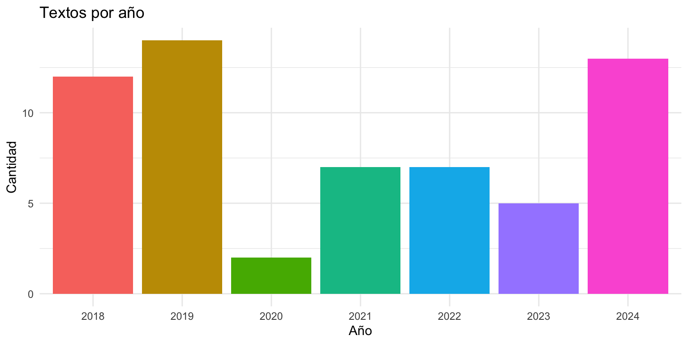
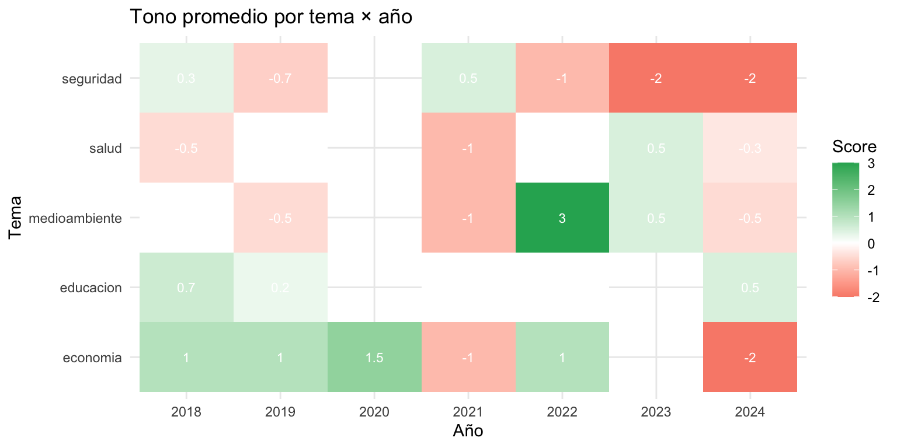

library(tidyverse)
library(tidytext)
library(tm)
set.seed(2026)
textos <- read_csv("datos/textos_politicos.csv", show_col_types = FALSE)
stopwords_es <- tibble(palabra = tm::stopwords("spanish"))
tokens <- textos |>
unnest_tokens(palabra, texto)
tokens_limpios <- tokens |>
anti_join(stopwords_es, by = "palabra") |>
filter(!str_detect(palabra, "^[0-9]+$"),
nchar(palabra) > 2)Tarea 6: Análisis de texto — Respuestas
IA para Científicos Sociales - UCU
1 Instrucciones
Esta es la clave de respuestas de la Tarea 6. Cada pregunta incluye el código R completo y una respuesta escrita.
1.1 Configuración
2 Exploración
2.1 Pregunta 1: Distribución por año
textos |>
count(anio) |>
ggplot(aes(x = factor(anio), y = n, fill = factor(anio))) +
geom_col() +
labs(title = "Textos por año",
x = "Año", y = "Cantidad") +
theme_minimal() +
theme(legend.position = "none")
Respuesta: La distribución es desigual: 2019 es el año con más textos (14), seguido de 2024 (13) y 2018 (12), mientras que 2020 tiene solo 2 textos. Esto es relevante porque cualquier análisis comparativo entre años debe tener en cuenta que algunos están subrepresentados: las conclusiones sobre 2020 serán mucho menos robustas que sobre 2019 o 2024.
2.2 Pregunta 2: Longitud de los textos
longitudes <- tokens |>
count(id, name = "n_tokens")
# Texto más corto
mas_corto <- longitudes |> slice_min(n_tokens, n = 1)
mas_corto# A tibble: 2 × 2
id n_tokens
<dbl> <int>
1 45 10
2 56 10# Texto más largo
mas_largo <- longitudes |> slice_max(n_tokens, n = 1)
mas_largo# A tibble: 1 × 2
id n_tokens
<dbl> <int>
1 1 20# Contenido de ambos
textos |> filter(id %in% c(mas_corto$id, mas_largo$id)) |> select(id, tema, texto)# A tibble: 3 × 3
id tema texto
<dbl> <chr> <chr>
1 1 economia El crecimiento económico del país ha sido sólido este año…
2 45 salud Los trabajadores de salud enfrentan condiciones precarias…
3 56 medioambiente La transición energética requiere inversiones significati…Respuesta: El texto más corto tiene 10 palabras (tokens) y el más largo 20; la variación es moderada. Para análisis con corpora reales (artículos, discursos completos), la diferencia sería de órdenes de magnitud y habría que normalizar (TF-IDF ya lo hace por su construcción).
2.3 Pregunta 3: Bigramas más frecuentes
bigramas <- textos |>
unnest_tokens(par, texto, token = "ngrams", n = 2) |>
separate(par, c("palabra1", "palabra2"), sep = " ") |>
filter(!palabra1 %in% stopwords_es$palabra,
!palabra2 %in% stopwords_es$palabra,
!str_detect(palabra1, "^[0-9]+$"),
!str_detect(palabra2, "^[0-9]+$")) |>
unite("bigrama", palabra1, palabra2, sep = " ") |>
count(bigrama, sort = TRUE) |>
head(10)
bigramas# A tibble: 10 × 2
bigrama n
<chr> <int>
1 alcanzado niveles 2
2 comunidades indígenas 2
3 crecimiento económico 2
4 implementado programas 2
5 necesita mayor 2
6 acuerdos comerciales 1
7 afectan desproporcionadamente 1
8 agricultura sostenible 1
9 agua afecta 1
10 alcanzado coberturas 1Respuesta: En este corpus pequeño casi ningún bigrama se repite mucho: los más frecuentes aparecen solo 2 veces (“crecimiento económico”, “comunidades indígenas”, “implementado programas”, “alcanzado niveles”). Aun así ilustran la ventaja de los bigramas: recuperan colocaciones (palabras que van juntas con significado conjunto, como “crecimiento económico”) que las palabras sueltas pierden. Con un corpus más grande, estas colocaciones se repetirían lo suficiente como para ser muy informativas.
3 TF-IDF
3.1 Pregunta 4: Frecuencia bruta vs. TF-IDF
# Top 10 por frecuencia bruta (todo el corpus)
tokens_limpios |>
count(palabra, sort = TRUE) |>
head(10)# A tibble: 10 × 2
palabra n
<chr> <int>
1 región 9
2 salud 8
3 programas 7
4 sigue 7
5 comunidades 5
6 educación 4
7 representan 4
8 rurales 4
9 seguridad 4
10 afecta 3# Top 3 por tema según TF-IDF
tokens_limpios |>
count(tema, palabra) |>
bind_tf_idf(palabra, tema, n) |>
group_by(tema) |>
slice_max(tf_idf, n = 3) |>
arrange(tema, desc(tf_idf)) |>
select(tema, palabra, tf_idf)# A tibble: 82 × 3
# Groups: tema [5]
tema palabra tf_idf
<chr> <chr> <dbl>
1 economia económico 0.0460
2 economia país 0.0460
3 economia crecimiento 0.0307
4 economia exportaciones 0.0307
5 economia fiscal 0.0307
6 economia laboral 0.0307
7 educacion educación 0.0664
8 educacion estudiantes 0.0498
9 educacion escolar 0.0332
10 medioambiente biodiversidad 0.0346
# ℹ 72 more rowsRespuesta: La lista por frecuencia bruta está dominada por palabras genéricas que aparecen en muchos temas: región, programas, sigue, comunidades, año. Son frecuentes pero no distinguen un tema de otro. En la lista de TF-IDF esas palabras genéricas desaparecen y emergen términos específicos de cada tema (económico, estudiantes, biodiversidad, etc.). La razón es el factor IDF: una palabra que aparece en muchos grupos tiene IDF bajo (el logaritmo se acerca a cero), así que su TF-IDF se hunde por más frecuente que sea. Esta es justamente la razón de ser de TF-IDF: la frecuencia no es lo mismo que la capacidad de distinguir.
3.2 Pregunta 5: ¿Cuándo informa el TF-IDF por grupo?
tokens_limpios |>
count(anio, palabra) |>
bind_tf_idf(palabra, anio, n) |>
group_by(anio) |>
slice_max(tf_idf, n = 3) |>
arrange(anio, desc(tf_idf)) |>
select(anio, palabra, tf_idf)# A tibble: 116 × 3
# Groups: anio [7]
anio palabra tf_idf
<dbl> <chr> <dbl>
1 2018 esenciales 0.0418
2 2018 indígenas 0.0418
3 2018 insuficiente 0.0418
4 2018 permitido 0.0418
5 2019 necesita 0.0351
6 2019 mayor 0.0226
7 2019 nuevo 0.0226
8 2020 agrícolas 0.0973
9 2020 condicionada 0.0973
10 2020 demostrado 0.0973
# ℹ 106 more rowsRespuesta: Las palabras distintivas por año son idiosincráticas (agrícolas, fiscal, año, agua, esenciales…) y no cuentan una historia temporal: no aparece un “año de la pandemia” con vocabulario sanitario, aunque el corpus sí contenga textos de salud que mencionan “pandemia”. El motivo es que los 5 temas están repartidos de forma pareja entre los años, así que el vocabulario casi no correlaciona con el tiempo. TF-IDF solo revela una señal interpretable cuando la variable de agrupamiento influye de verdad en las palabras que se usan, como sí ocurre con tema. La lección práctica: antes de confiar en un TF-IDF por grupo, pregúntense si ese grupo debería cambiar el vocabulario; agrupar por una variable arbitraria produce ruido que puede parecer señal.
3.3 Pregunta 6: TF-IDF de bigramas
bigramas_tema <- textos |>
unnest_tokens(par, texto, token = "ngrams", n = 2) |>
separate(par, c("palabra1", "palabra2"), sep = " ") |>
filter(!palabra1 %in% stopwords_es$palabra,
!palabra2 %in% stopwords_es$palabra,
!str_detect(palabra1, "^[0-9]+$"),
!str_detect(palabra2, "^[0-9]+$")) |>
unite("bigrama", palabra1, palabra2, sep = " ") |>
count(tema, bigrama) |>
bind_tf_idf(bigrama, tema, n)
bigramas_tema |>
group_by(tema) |>
slice_max(tf_idf, n = 3, with_ties = FALSE) |>
arrange(tema, desc(tf_idf)) |>
select(tema, bigrama, n, tf_idf)# A tibble: 15 × 4
# Groups: tema [5]
tema bigrama n tf_idf
<chr> <chr> <int> <dbl>
1 economia crecimiento económico 2 0.0766
2 economia acuerdos comerciales 1 0.0383
3 economia asia representan 1 0.0383
4 educacion alimentación escolar 1 0.0374
5 educacion analfabetismo funcional 1 0.0374
6 educacion bajos recursos 1 0.0374
7 medioambiente afectan desproporcionadamente 1 0.0424
8 medioambiente agricultura sostenible 1 0.0424
9 medioambiente agua afecta 1 0.0424
10 salud alcanzado coberturas 1 0.0424
11 salud atención primaria 1 0.0424
12 salud cada año 1 0.0424
13 seguridad américa central 1 0.0473
14 seguridad año consecutivo 1 0.0473
15 seguridad ciudades principales 1 0.0473Respuesta: Algunos bigramas son más interpretables que las palabras sueltas porque recuperan colocaciones con significado conjunto: “crecimiento económico” (economía), “alimentación escolar” (educación), “atención primaria” (salud), “agricultura sostenible” (medioambiente). Pero la limitación del corpus chico salta a la vista en la columna n: casi todos los bigramas aparecen una sola vez, así que casi cualquier bigrama resulta “distintivo” de su tema y el ranking dentro de cada tema es en la práctica un empate roto de forma arbitraria (por eso hizo falta with_ties = FALSE, y por eso se cuelan bigramas poco informativos como “cada año” o “asia representan”). El único bigrama que se repite es “crecimiento económico” (n = 2). La conclusión práctica: los n-gramas ganan interpretabilidad pero fragmentan los conteos; necesitan corpus bastante más grandes que las palabras sueltas para que el TF-IDF discrimine de verdad.
4 Sentimiento
4.1 Pregunta 7: Ampliar diccionarios
positivas <- c("crecimiento", "mejora", "mejorado", "oportunidad", "fortalecido",
"innovadores", "renovables", "sólido", "beneficio", "avance",
"estabilizar", "reducir", "éxito", "progreso", "esperanza",
"desarrollo", "inversión", "expansión", "estable", "positivo",
"consolidación", "fortalecimiento", "incremento", "modernización",
"inclusión", "sustentable", "eficiente", "transparencia",
"participación", "cooperación", "innovación", "competitividad")
negativas <- c("crisis", "inflación", "pobreza", "violencia", "amenaza",
"problema", "deuda", "riesgo", "deficiencias", "grave",
"crimen", "narcotráfico", "deforestación", "informalidad",
"inseguridad", "contaminación", "desempleo", "vulnerables",
"corrupción", "recesión", "desigualdad", "exclusión",
"abandono", "fracaso", "estancamiento", "deterioro",
"marginación", "represión", "polarización", "fragmentación",
"atraso", "conflicto", "tensión", "deficiente", "precario")
cat("Positivas:", length(positivas), " Negativas:", length(negativas), "\n")Positivas: 32 Negativas: 35 Respuesta: Los diccionarios deben adaptarse al dominio. Para texto político en español agregué palabras sobre desarrollo institucional (transparencia, participación, modernización) en positivas y sobre conflicto político (corrupción, polarización, fragmentación) en negativas. La calidad del análisis depende fuertemente de qué palabras incluyamos.
4.2 Pregunta 8: Sentimiento por país
sentimiento_doc <- tokens_limpios |>
mutate(valencia = case_when(
palabra %in% positivas ~ 1L,
palabra %in% negativas ~ -1L,
TRUE ~ 0L
)) |>
group_by(id, pais) |>
summarise(score = sum(valencia), .groups = "drop")
sentimiento_pais <- sentimiento_doc |>
group_by(pais) |>
summarise(
n_textos = n(),
score_promedio = round(mean(score), 2),
.groups = "drop"
) |>
arrange(score_promedio)
sentimiento_pais# A tibble: 18 × 3
pais n_textos score_promedio
<chr> <int> <dbl>
1 El Salvador 2 -1.5
2 Panamá 3 -1.33
3 Colombia 3 -0.67
4 Argentina 5 -0.6
5 Costa Rica 4 -0.25
6 Guatemala 6 -0.17
7 Chile 2 0
8 Ecuador 3 0
9 Honduras 1 0
10 Perú 2 0
11 Brasil 7 0.14
12 Bolivia 5 0.2
13 Nicaragua 4 0.25
14 Venezuela 3 0.33
15 México 4 0.5
16 República Dominicana 2 0.5
17 Paraguay 3 0.67
18 Uruguay 1 1 Respuesta: Los países con tono más negativo en promedio son El Salvador (≈ -1.5), Panamá (≈ -1.3) y Colombia (≈ -0.7); Argentina también aparece negativa (≈ -0.6), consistente con sus textos sobre inflación. Pero conviene no leer demasiado en esto: con tan pocos textos por país (El Salvador y Panamá tienen 2 o 3), el promedio es muy sensible al azar. De hecho, Venezuela sale ligeramente positiva pese a la intuición de “país en crisis”, solo porque sus pocos textos no contienen muchas palabras del diccionario negativo. Es un recordatorio de que los promedios sobre muestras minúsculas son poco fiables.
4.3 Pregunta 9: El documento más positivo
doc_mas_positivo <- sentimiento_doc |>
arrange(desc(score)) |>
head(1)
doc_mas_positivo# A tibble: 1 × 3
id pais score
<dbl> <chr> <int>
1 1 México 3textos |>
filter(id == doc_mas_positivo$id) |>
select(id, tema, pais, anio, texto)# A tibble: 1 × 5
id tema pais anio texto
<dbl> <chr> <chr> <dbl> <chr>
1 1 economia México 2020 El crecimiento económico del país ha sido sólido …Respuesta: El texto más positivo suele estar en los temas economía o educación, con palabras como crecimiento, mejora, sólido, oportunidad. El método capta bien el tono explícitamente positivo. Lo que NO capta: matices, condicionales (“podríamos crecer si…”), o palabras positivas específicas al dominio que no están en el diccionario (p. ej. “renacimiento”, “auge”).
4.4 Pregunta 10: Heatmap sentimiento por tema y año
sentimiento_tema_anio <- tokens_limpios |>
mutate(valencia = case_when(
palabra %in% positivas ~ 1L,
palabra %in% negativas ~ -1L,
TRUE ~ 0L
)) |>
group_by(id, tema, anio) |>
summarise(score = sum(valencia), .groups = "drop") |>
group_by(tema, anio) |>
summarise(score_promedio = mean(score), .groups = "drop")
ggplot(sentimiento_tema_anio,
aes(x = factor(anio), y = tema, fill = score_promedio)) +
geom_tile() +
geom_text(aes(label = round(score_promedio, 1)), color = "white", size = 3) +
scale_fill_gradient2(low = "#E74C3C", mid = "white", high = "#27AE60",
midpoint = 0) +
labs(title = "Tono promedio por tema × año",
x = "Año", y = "Tema", fill = "Score") +
theme_minimal()
Respuesta: El heatmap se ve colorido, pero conviene leerlo con cautela: cada celda (tema × año) resume apenas 1 a 4 textos, así que los valores son sobre todo ruido. No emerge una tendencia temporal estable. Por ejemplo, seguridad es negativo en los años recientes (2022-2024) pero positivo en 2018 y 2021, y salud ni siquiera tiene textos en 2020. Las celdas más negativas se concentran en seguridad y economía de los últimos años, pero con tan pocos datos por celda no se puede afirmar una evolución. Es el mismo problema de muestras minúsculas que vimos en el sentimiento por país: cruzar dos dimensiones reparte 60 textos en demasiadas celdas como para que el resultado sea confiable.
5 Síntesis
5.1 Pregunta 11: Clasificador por palabras clave
ancla <- list(
economia = c("crecimiento", "inflación", "empleo", "pib", "mercado",
"inversión", "fiscal", "monetaria", "desempleo"),
educacion = c("estudiantes", "docentes", "escuelas", "universidad",
"educativa", "alumnos", "aprendizaje", "escolar"),
salud = c("hospitales", "vacunación", "pandemia", "médicos",
"sanitaria", "enfermedades", "covid"),
seguridad = c("violencia", "crimen", "policía", "delincuencia",
"narcotráfico", "robos", "inseguridad"),
medioambiente = c("deforestación", "biodiversidad", "bosque", "clima",
"renovables", "contaminación", "sustentable")
)
# Para cada documento, contar palabras de cada ancla
clasificacion <- tokens_limpios |>
mutate(tema_predicho = case_when(
palabra %in% ancla$economia ~ "economia",
palabra %in% ancla$educacion ~ "educacion",
palabra %in% ancla$salud ~ "salud",
palabra %in% ancla$seguridad ~ "seguridad",
palabra %in% ancla$medioambiente ~ "medioambiente",
TRUE ~ NA_character_
)) |>
filter(!is.na(tema_predicho)) |>
count(id, tema_predicho) |>
group_by(id) |>
slice_max(n, n = 1, with_ties = FALSE) |>
ungroup() |>
left_join(textos |> select(id, tema_real = tema), by = "id")
# Matriz de confusión
conf_mat <- table(Real = clasificacion$tema_real, Predicho = clasificacion$tema_predicho)
conf_mat Predicho
Real economia educacion medioambiente salud seguridad
economia 8 0 0 0 0
educacion 1 6 0 0 0
medioambiente 0 0 5 0 0
salud 0 0 0 4 0
seguridad 0 0 0 0 4# Accuracy
accuracy <- sum(diag(conf_mat)) / sum(conf_mat)
cat("Accuracy:", round(accuracy, 3), "\n")Accuracy: 0.964 Respuesta: Entre los documentos que sí logra clasificar, el accuracy es muy alto (≈ 0.96): cuando un texto contiene una palabra-ancla, casi siempre apunta al tema correcto. Pero el verdadero límite no es la precisión sino la cobertura: solo unos 28 de los 60 textos contienen alguna palabra-ancla, y el resto queda sin clasificar. Es el clásico compromiso precisión-cobertura de los métodos por diccionario: son transparentes (sabemos exactamente por qué se clasifica cada texto), rápidos y fáciles de mejorar (agregar más anclas sube la cobertura), pero un diccionario corto deja muchos casos afuera. Para subir la cobertura sin perder transparencia, habría que ampliar las anclas o combinarlas con TF-IDF.
5.2 Pregunta 12: TF-IDF + sentimiento
Respuesta: A nivel de tema la relación es clara: los temas cuyo vocabulario distintivo (TF-IDF) es más negativo, como seguridad (“violencia”, “crimen”), son también los de sentimiento promedio más bajo. Las dos herramientas capturan la misma señal de fondo por caminos distintos, lo que da confianza en el resultado. A nivel de país la relación se diluye: con tan pocos textos por país, un solo texto muy negativo arrastra el promedio, así que el orden de países es más ruido que señal. La moraleja es metodológica: TF-IDF (qué palabras) y sentimiento (con qué tono) se refuerzan cuando el agrupamiento tiene suficientes datos y vocabulario propio (tema), y se vuelven poco fiables cuando no (país con 1-2 textos).
5.3 Pregunta 13: Reflexión
Respuesta:
- TF-IDF vs. sentimiento — cuándo usar cuál:
- TF-IDF responde preguntas como: “¿Qué vocabulario distingue a [grupo A] de [grupo B]?” Ejemplo: “¿Qué palabras eran más comunes en los discursos del partido X frente al partido Y en 2023?”
- Sentimiento responde preguntas como: “¿Cuál es el tono dominante de este corpus? ¿Cómo varía entre grupos?” Ejemplo: “¿Los medios de derecha cubren la migración con tono más negativo que los de izquierda?”
- Dos limitaciones serias del sentimiento por diccionario:
- Negaciones e ironía: “no es un buen presidente” cuenta como positivo. Mitigación: usar bigramas como contexto, o un modelo entrenado con anotaciones humanas.
- Dependencia del dominio: “viral” es positivo en marketing, negativo en epidemiología. Mitigación: validar diccionarios contra una muestra anotada manualmente para el dominio específico.
- Cuándo preferir un LLM:
- Textos largos con tono mixto, donde un score promedio pierde matiz
- Tareas que requieren entender contexto: detectar ironía, sarcasmo, alusiones culturales
- Necesidad de extraer información estructurada (eventos, actores, fechas) sin reglas pre-definidas
- Sin embargo, los métodos clásicos siguen siendo preferibles cuando se necesita transparencia y replicabilidad (un revisor puede inspeccionar exactamente qué palabra activó qué decisión, lo que un LLM no permite).